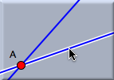
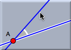
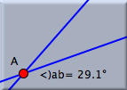

Angle
This mode is used to measure the angle between two lines. The application of this mode requires a little care. Between two lines there is not only one angle:
there are two, an angle and its supplementary angle. To take this fact into account, "angle" mode is provided with a position-sensitive selection mechanism. To measure the angle, two lines have to be selected. In order to determine which angle will be chosen, three points are relevant: the click point of the first selection, the click point of the second selection, and the intersection of the two selected lines. Imagine a triangle formed by these three points. The inner angle at the intersection point of the lines will be measured. This is what you would intuitively expect.
Cinderella simplifies the selection process with graphical hints that show the angle that will be measured.
 | |
 | |
 |
First selection:
A line is highlighted.
The selection point
is memorized.
| |
Moving the mouse:
Hints are shown
that indicate the
angle that will
be measured. | |
Second selection:
The angle is
measured.
|
Synopsis
Angle mode measures the angle between two lines.
Caution
The definition of angle depends on the type of geometry (Euclidean, hyperbolic, or elliptic). In hyperbolic geometry angles may even be complex numbers.